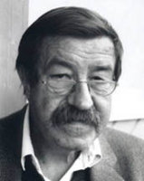

(1927 – )

II. Dünya Savaşı felaketini yaşamış tüm yazarlar gibi Günter Grass da hemen hemen tüm yapıtlarında insanlığı savaşlara karşı uyarmaya çalıştı. Savaş karşıtı gösteriler kadar çevreci gösterilerde de en ön saflardaydı ve insanlığı çevre sorunları karşısında ilk uyaran sanatçılardan biri olma duyarlılığını gösterdi.
Günter Grass (okunuşu: Günter Gras), 16 Ekim 1927'de o zamanki adı "Danzig-Lanfuhr" olan, bugün Polonya topraklarındaki Gdansk kentinde dünyaya geldi. Manav olan babası Almandı ve annesi Polonyalıydı. İlkokulu ve liseyi Danzig'de okuyan yazar 1930'larda dönemin çoğu genci gibi "Hitler gençliği" grubuna katıldı ve 16 yaşında askere gitti. 1944-46 yılları arasında askerlik yaparken ABD kuvvetlerine esir düşen yazar, savaş sonrasında bir yandan çiftlik işçisi ve madenci olarak çalışırken bir yandan da Düsseldorf ve Berlin'de sanat eğitimi aldı. 1956-59 yılları arasını Berlin ve Paris'te heykeltıraşlık, grafik ressamlığı ve yazarlık yaparak geçirdi. Kendilerine "Gruppe 47" adını veren bir grup sanatçıya katıldı, 1956 yılında ilk şiirleri basıldı ve 1957'de ilk oyunu sahnelendi. 1954 yılında evlendiği Anna Margarita Schwartz'tan 1978'de ayrıldı.
1959 yılında Danzig Üçlemesi adını verdiği romanlarından ilki olan Teneke Trampet (diğer ikisi: Kedi ve Fare [1961] ve Köpek Yılları [1963]) yayımlanınca uluslararası üne kavuştu. 1979 yılında yönetmen Volker Schlöndorff tarafından filme de çekilen Teneke Trampet ve ardından gelenler, Almanya'nın 20. yüzyılın ilk yarısında yaşadıklarını çok eleştirel bir gözle anlatıyordu.
1960'lı yıllarda politikayla etkin olarak ilgilenen yazar, Sosyal Demokrat Parti ve onun efsanevi başkanı Willy Brandt'la birlikte çalıştı. Lokal Anestetik (1969) ve Bir Salyangoz'un Güncesinden adlı kitaplarında entelektüellerin sıkıntılarına değindi. Savaş karşıtı ve çevreci fikirleriyle de öne çıkan sanatçı, Pisibalığı (1977) ve Fare (1986) kitaplarında günümüz uygarlığını eleştirdi. Uzak Tarla'da (1995) ise Berlin Duvarı'nın inşa edilmesi ve yıkılışı arasında geçen süreçteki Doğu Almanya'yı anlattı. Batı ve Doğu Almanya'nın birleşmesini Almanya'nın 1938'de Avusturya'yı ilhakıyla bir tutan Grass, bu nedenle ülkesinde çok büyük eleştirilere uğradıysa da kararında ısrar etti. Yüzyılım (1999) adlı kitabında yaşadığı yüzyılın tamamını kendi açısından ve yıl yıl anlattı. 1983-86 yılları arasında Berlin Güzel Sanatlar Akademisi'nin başkanı olan yazar, aynı zamanda ressam olduğu için kendi kitaplarının kapaklarını da çoğunlukla kendisi yapmaktadır.
1975 yılında Hindistan'a bir yolculuk yapan yazar, sonraları bu ülkeyi sık sık ziyaret etti hatta 1986-87 yıllarında burada yaşayarak Dilini Çıkar (1988) kitabını yazdı.
Fransa, Almanya, İtalya gibi ülkelerden çeşitli edebiyat ödülleri alan Günter Grass edebiyatın en saygın ödülü olan Nobel Edebiyat Ödülü'nü 1999 yılında kazandı. 2002 yılında yayımladığı Yengecin Yürüyüşü adlı kitabında, 1945 yılında bir Sovyet denizaltısı tarafından batırılan Wilhelm Güstloff gemisinde ölen ve çoğu mülteci olan kurbanların öyküsünü anlatan Grass, bu kitabıyla büyük prestij kazandı ve kitap kısa sürede birçok dile çevrildi.
Seçme Romanları: Teneke Trampet (1959 – Gendaş Yayınları, 2000), Kedi ve Fare (1961), Köpek Yılları (1963), Lokal Anestetik (1969), Bir Salyangoz'un Güncesinden (1972), Pisibalığı (1977), Dişi Fare (1986 – Gendaş Yayınları, 2000), Uzak Tarla (1995), Yüzyılım (1999 – Gendaş Yayınları, 2000)